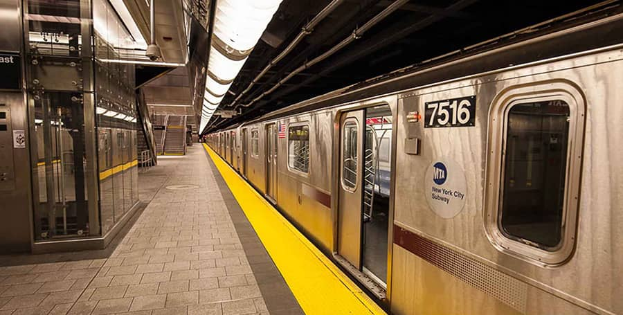
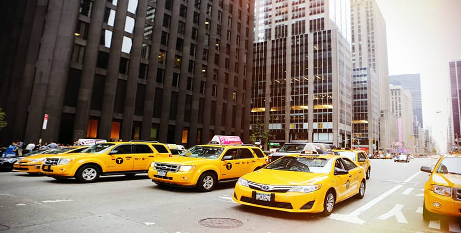
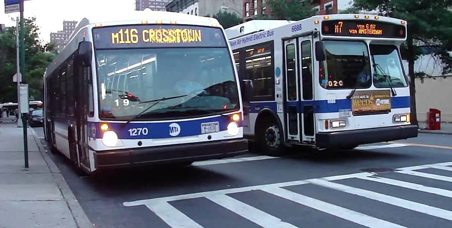

Transporte
La red de transporte público de Nueva York es muy eficiente y permite desplazarse por toda la ciudad de una forma bastante rápida y cómoda. Conoce cómo moverse por Nueva York.
Tipos de Transporte Público

Metro
El metro de Nueva York fue inaugurado en 1904 y es el metro más extenso de Estados Unidos y uno de los más grandes del mundo. Tiene casi 500 paradas y más de 1000 kilómetros de vías.
ver mas

Taxi
Los taxis en Nueva York son grandes, cómodos, limpios y hasta tienen pantalla para poner lo que quieras, incluido el GPS para eliminar las sospechas de que te estén dando un paseo turístico.
ver mas

Autobús
En Nueva York, los autobuses son una opción muy cómoda si no quieres usar el metro. Descubre las tarifas y los horarios de este modo de transporte.
ver mas